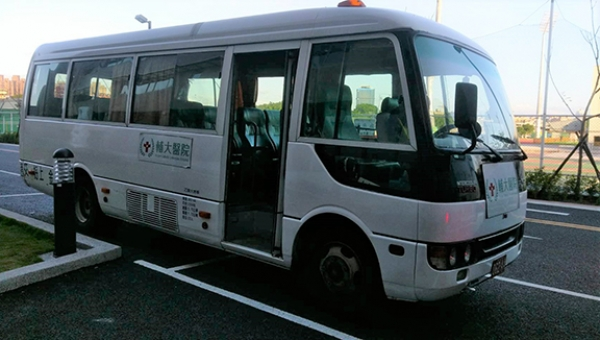
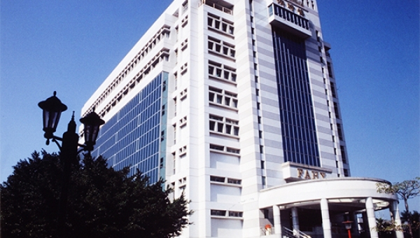

３月２８日台北市長柯文哲再度蒞臨輔仁大學，究竟為了什麼事？原來是前來參加輔大哲學系所舉辦的「哲學，行不行？！意料之外、情理之內的人生思辨座談會」。
輔仁大學校長江漢聲當選新一任大專院校體育總會會長，他表示輔大作為體育名校，校長說「希望以輔大對體育的重視及愛好，來帶動全國的大專院校體育都能蓬勃發展，達到健全體格，這是我們的使命感。」
2018年「台灣餐桌文化、倡求世界和平」啟動儀式3月28日下午在輔仁大學濟時樓九樓國際會議廳舉行，行政院長賴清德、政務次長吳志中及各政府部門官員、偕同輔仁大學眾多師長、貴賓出席，

輔大附醫的成立是新五泰地區民眾的一大福音，為了便利與服務社區，對醫院附近１.５公里以內的社區民眾享有掛號費優惠，同時也對校內教職員與學生提供有許多就醫福利：
輔大廣告第二十一屆畢展《好主議事務所》於三月十一號圓滿落幕，三天展期吸引許多觀展者的蒞臨。今年畢展與往年不同，將廣告加入「議題」元素，以大學生的角度切入，展現了廣告的不同可能性，獲得各界好評。
2018年3月14日輔大管理學院隆重邀請到Amazon Web Services (AWS) Educate program全球領導人Ken Eisner先生與美國卡內基美隆大學(Carnegie Mellon University)資訊工程學系Majd F. Sakr教授於野聲樓谷欣廳演講。
107學年大學學測在23日發放成績單，您準備好選學校了嗎？

別以為這是玩Game，全台各大學圖書資訊檢索量，輔大與國立大學一起評比，名列全台第四名。想讀書，輔大的精神糧食:紙本、電子影、音、圖、文、3D等，多到沒時間吸收，讀十次大學都讀不完。